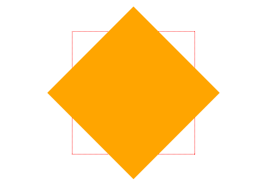
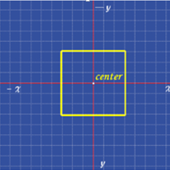

transform()
transform 属性允许你修改CSS视觉格式模型的坐标空间。使用它，元素可以被转换（translate）、旋转（rotate）、缩放（scale）、倾斜（skew）。只对 block 级元素生效
rotate()
旋转rotate()函数通过指定的角度参数使元素相对原点进行旋转。它主要在二维空间内进行操作，设置一个角度值，用来指定旋转的幅度。如果这个值为正值，元素相对原点中心顺时针旋转；如果这个值为负值，元素相对原点中心逆时针旋转。
1 | // HTML |

skew()
skew()函数能够让元素倾斜显示。它可以将一个对象以其中心位置围绕着X轴和Y轴按照一定的角度倾斜。这与rotate()函数的旋转不同，rotate()函数只是旋转，而不会改变元素的形状。skew()函数不会旋转，而只会改变元素的形状。1
2
3
4
5
6transform: skew(ax[, ay]) /* one or two <angle>s, e.g. skew(30deg,-10deg) */
// 元素在X轴和Y轴方向以指定的角度倾斜。如果ay未提供，在Y轴上没有倾斜。
transform: skewX(angle) /* an <angle>, e.g. skewX(-30deg) */
// 绕X轴以指定的角度倾斜
transform: skewY(angle) /* an <angle>, e.g. skewY(4deg) */
// 绕Y轴以指定的角度倾斜
scale()
缩放 scale()函数 让元素根据中心原点对对象进行缩放。
缩放 scale 具有三种情况：
scale(X,Y)使元素水平方向和垂直方向同时缩放（也就是X轴和Y轴同时缩放）1
2
3
4
5
6div:hover {
-webkit-transform: scale(1.5,0.5);
-moz-transform:scale(1.5,0.5)
transform: scale(1.5,0.5);
}
// Y是一个可选参数，如果没有设置Y值，则表示X，Y两个方向的缩放倍数是一样的。scaleX(x)元素仅水平方向缩放（X轴缩放）scaleY(y)元素仅垂直方向缩放（Y轴缩放）
translate()
translate()函数可以将元素向指定的方向移动，类似于position中的relative。或以简单的理解为，使用translate()函数，可以把元素从原来的位置移动，而不影响在X、Y轴上的任何Web组件。
translate我们分为三种情况：
- translate(x,y)水平方向和垂直方向同时移动（也就是X轴和Y轴同时移动）例:
translate(100px,20px)
- translateX(x)仅水平方向移动（X轴移动）
- translateY(Y)仅垂直方向移动（Y轴移动）
matrix()
matrix() 是一个含六个值的(a,b,c,d,e,f)变换矩阵，用来指定一个2D变换，相当于直接应用一个[a b c d e f]变换矩阵。
a为元素的水平伸缩量，1为原始大小；
b为纵向扭曲，0为不变；
c为横向扭曲，0不变；
d为垂直伸缩量，1为原始大小；
e为水平偏移量，0是初始位置；
f为垂直偏移量，0是初始位置matrix(scaleX(),skewX(),skewY(),scaleY(),translateX(),translateY());
transform-origin
任何一个元素都有一个中心点，默认情况之下，其中心点是居于元素X轴和Y轴的50%处。如下图所示：
在没有重置transform-origin改变元素原点位置的情况下，CSS变形进行的旋转、位移、缩放，扭曲等操作都是以元素自己中心位置进行变形。但很多时候，我们可以通过transform-origin来对元素进行原点位置改变，使元素原点不在元素的中心位置，以达到需要的原点位置。
transform-origin取值和元素设置背景中的background-position取值类似，如下表所示：
transition
在CSS中创建简单的过渡效果可以从以下几个步骤来实现：
第一，在默认样式中声明元素的初始状态样式；
第二，声明过渡元素最终状态样式，比如悬浮状态；
第三，在默认样式中通过添加过渡函数，添加一些不同的样式。
CSS3的过度transition属性是一个复合属性，主要包括以下几个子属性：
transition-property:指定过渡动画的CSS属性名称，而这个过渡属性只有具备一个中点值的属性（需要产生动画的属性）才能具备过渡效果transition-duration:指定完成设置一个属性过渡到另一个属性所需的时间，也就是从旧属性过渡到新属性花费的时间长度过渡所需的时间transition-timing-function:指定过渡函数,主要用来指定浏览器的过渡速度，以及过渡期间的操作进展情况，其中要包括以下几种函数：
transition-delay:指定一个动画开始执行的时间，也就是说当改变元素属性值后多长时间开始执行。
有时我们想改变两个或者多个css属性的transition效果时，只要把几个transition的声明串在一起，用逗号（“，”）隔开，然后各自可以有各自不同的延续时间和其时间的速率变换方式。但需要值得注意的一点：第一个时间的值为 transition-duration，第二个为transition-delay。例如：a{ transition: background 0.8s ease-in 0.3,color 0.6s ease-out 0.3;}transition: property duration timing-function delay;
animation
animation的子属性有:
animation-delay
设置延时，即从元素加载完成之后到动画序列开始执行的这段时间。
animation-direction
设置动画在每次运行完后是反向运行还是重新回到开始位置重复运行。
值：normal每个循环内动画向前循环，换言之，每个动画循环结束，动画重置到起点重新开始，这是默认属性。alternate动画交替反向运行，反向运行时，动画按步后退，同时，带时间功能的函数也反向，比如，ease-in 在反向时成为ease-out。计数取决于开始时是奇数迭代还是偶数迭代reverse反向运行动画，每周期结束动画由尾到头运行。alternate-reverse反向交替， 反向开始交替
动画第一次运行时是反向的，然后下一次是正向，后面依次循环。决定奇数次或偶数次的计数从1开始。
animation-duration
设置动画一个周期的时长,也就是完成从0%到100%一次动画所需时间。
animation-iteration-count
设置动画重复次数， 可以指定infinite无限次重复动画。其值通常为整数，但也可以使用带有小数的数字，其默认值为1，这意味着动画将从开始到结束只播放一次。
animation-name
指定由@keyframes描述的关键帧名称。
animation-play-state
允许暂停和恢复动画。值:running当前动画正在运行。paused当前动画以被停止。
animation-timing-function
设置动画速度， 即通过建立加速度曲线，设置动画在关键帧之间是如何变化。它和transition中transition-timing-function一样，具有以下几种变换方式：ease,ease-in,ease-in-out,ease-out,linear和cubic-bezier。
animation-fill-mode
指定动画执行前后如何为目标元素应用样式。值：none动画执行前后不改变任何样式forwards目标保持动画最后一帧的样式，最后一帧是哪个取决于 animation-direction和 animation-iteration-count backwards动画采用相应第一帧的样式，保持 animation-delayboth动画将会执行 forwards 和 backwards 执行的动作。1
2
3
4
5
6
7
8
9<!-- @keyframes duration | timing-function | delay |
iteration-count | direction | fill-mode | play-state | name -->
animation: 3s ease-in 1s 2 reverse both paused slidein;
<!-- @keyframes duration | timing-function | delay | name -->
animation: 3s linear 1s slidein;
<!-- @keyframes duration | name -->
animation: 3s slidein;
@keyframes
1 | @keyframes <identifier> { |
@keyframes让开发者通过指定动画中特定时间点必须展现的关键帧样式（或者说停留点）来控制CSS动画的中间环节。这让开发者能够控制动画中的更多细节而不是全部让浏览器自动处理。
要使用关键帧, 先创建一个带名称的@keyframes规则，以便后续使用 animation-name这个属性来调用指定的@keyframes. 每个@keyframes 规则包含多个关键帧，也就是一段样式块语句，每个关键帧有一个百分比值作为名称，代表在动画进行中，在哪个阶段触发这个帧所包含的样式。
关键帧的编写顺序没有要求，最后只会根据百分比按由小到大的顺序触发。
为了让一个关键帧列表有效，它必须至少包含了对0%（或from）和100%（或to）即动画的开头帧和结束帧的定义。 如果都没有进行定义，那么整个@keyframes 是无效的，不能使用。@keyframes 不能在内联样式中使用